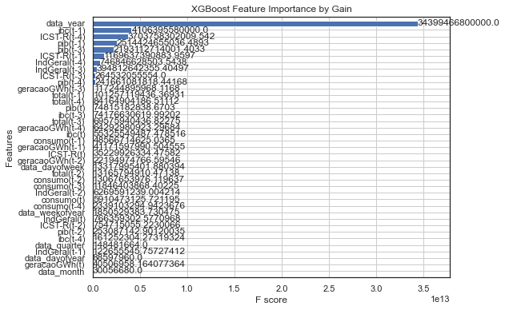
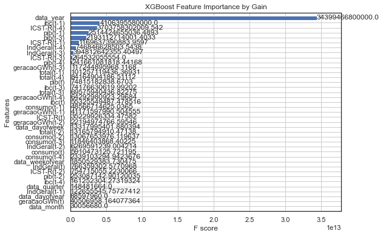

AutoTS 2019¶
# Importa bibliotecas; inicializa variáveis; define funções.
import pandas as pd
import matplotlib as mpl
import matplotlib.pyplot as plt
from datetime import datetime
import auto_ts as AT
import math as mt
from sklearn.metrics import mean_squared_error
import seaborn as sns
colunas = ['data','total','ibc','pib','consumo', 'ICST-R', 'geracaoGWh','IndGeral']
mpl.rcParams['figure.figsize'] = (8, 6)
mpl.rcParams['axes.grid'] = False
dados_autoML = pd.read_csv('dadosRonaldo.csv')
dados_autoML.head()
df = dados_autoML[colunas]
df = df.set_index('data')
df.index = pd.to_datetime(df.index)
df.info()
print ("Rows : " ,df.shape[0])
print ("Columns : " ,df.shape[1])
print ("\nFeatures : \n" ,df.columns.tolist())
print ("\nMissing values : ", df.isnull().any())
print ("\nUnique values : \n",df.nunique())
df
Imported auto_timeseries version:0.0.36. Call by using:
model = auto_timeseries(score_type='rmse',
time_interval='M',
non_seasonal_pdq=None, seasonality=False, seasonal_period=12,
model_type=['best'],
verbose=2)
model.fit(traindata, ts_column,target)
model.predict(testdata, model='best')
<class 'pandas.core.frame.DataFrame'>
DatetimeIndex: 84 entries, 2014-01-01 to 2020-12-01
Data columns (total 7 columns):
# Column Non-Null Count Dtype
--- ------ -------------- -----
0 total 84 non-null int64
1 ibc 84 non-null float64
2 pib 84 non-null float64
3 consumo 84 non-null float64
4 ICST-R 84 non-null float64
5 geracaoGWh 84 non-null float64
6 IndGeral 84 non-null float64
dtypes: float64(6), int64(1)
memory usage: 5.2 KB
Rows : 84
Columns : 7
Features :
['total', 'ibc', 'pib', 'consumo', 'ICST-R', 'geracaoGWh', 'IndGeral']
Missing values : total False
ibc False
pib False
consumo False
ICST-R False
geracaoGWh False
IndGeral False
dtype: bool
Unique values :
total 84
ibc 79
pib 84
consumo 72
ICST-R 73
geracaoGWh 84
IndGeral 74
dtype: int64
| total | ibc | pib | consumo | ICST-R | geracaoGWh | IndGeral | |
|---|---|---|---|---|---|---|---|
| data | |||||||
| 2014-01-01 | 13427897 | 2.75 | 455935.0 | 4.027976e+07 | 97.8 | 50045.962407 | 53.1 |
| 2014-02-01 | 14152120 | 3.13 | 450358.8 | 4.165349e+07 | 96.7 | 46459.730274 | 52.3 |
| 2014-03-01 | 13710770 | 3.09 | 462159.8 | 4.026943e+07 | 96.3 | 48004.277170 | 52.4 |
| 2014-04-01 | 12602895 | 2.37 | 468767.5 | 3.959185e+07 | 92.6 | 45412.583753 | 49.2 |
| 2014-05-01 | 14603442 | 2.23 | 473347.1 | 3.910050e+07 | 94.6 | 44890.282526 | 47.9 |
| ... | ... | ... | ... | ... | ... | ... | ... |
| 2020-08-01 | 33983713 | -3.35 | 628818.8 | 3.912152e+07 | 87.8 | 45954.347797 | 57.0 |
| 2020-09-01 | 32205815 | -3.56 | 632047.2 | 4.020856e+07 | 91.5 | 46045.040560 | 61.6 |
| 2020-10-01 | 33749277 | -3.94 | 660199.5 | 4.245064e+07 | 95.2 | 46098.056273 | 61.8 |
| 2020-11-01 | 33762169 | -4.06 | 666928.9 | 4.100828e+07 | 93.8 | 45883.704482 | 62.9 |
| 2020-12-01 | 31490103 | -3.99 | 676371.9 | 4.187399e+07 | 93.9 | 45799.031123 | 63.1 |
84 rows × 7 columns
Explorando o conjunto de dados utilizados.
ec_df = df
ec_data = ec_df['total']
ec_data.head()
df.describe()
ec_data.plot(grid=True)
<AxesSubplot:xlabel='data'>

Vamos avaliar o funcionamento da AutoTS, utilizando os dados de 2014 até 2018 para prever o ‘total’ em 2019.
ec_df_2019=ec_df.loc['2019']
ec_data_2019=ec_df_2019['total']
ec_data_2019.plot.bar()
<AxesSubplot:xlabel='data'>
final_df = df.copy()
final_df=final_df.reset_index()
final_df=final_df[colunas]
final_df.head(10)
| data | total | ibc | pib | consumo | ICST-R | geracaoGWh | IndGeral | |
|---|---|---|---|---|---|---|---|---|
| 0 | 2014-01-01 | 13427897 | 2.75 | 455935.0 | 40279759.00 | 97.8 | 50045.962407 | 53.1 |
| 1 | 2014-02-01 | 14152120 | 3.13 | 450358.8 | 41653487.00 | 96.7 | 46459.730274 | 52.3 |
| 2 | 2014-03-01 | 13710770 | 3.09 | 462159.8 | 40269429.00 | 96.3 | 48004.277170 | 52.4 |
| 3 | 2014-04-01 | 12602895 | 2.37 | 468767.5 | 39591854.00 | 92.6 | 45412.583753 | 49.2 |
| 4 | 2014-05-01 | 14603442 | 2.23 | 473347.1 | 39100499.00 | 94.6 | 44890.282526 | 47.9 |
| 5 | 2014-06-01 | 13296350 | 1.85 | 458516.5 | 37726472.88 | 93.1 | 41970.305389 | 47.4 |
| 6 | 2014-07-01 | 14742923 | 1.45 | 481994.0 | 37866809.00 | 91.6 | 42991.945569 | 46.4 |
| 7 | 2014-08-01 | 14540126 | 1.13 | 477052.9 | 38550694.00 | 92.0 | 42636.899277 | 46.5 |
| 8 | 2014-09-01 | 15667226 | 0.85 | 476520.6 | 38894976.00 | 90.5 | 43171.224770 | 46.5 |
| 9 | 2014-10-01 | 14301399 | 0.49 | 493304.7 | 40100440.59 | 88.0 | 46186.817965 | 45.8 |
Preparando os conjuntos de treino e teste; também outros parâmetros usado pelo AutoTS.
traindata = final_df[:60]
testdata = final_df[60:72]
print(traindata.shape, testdata.shape)
ts_column = 'data'
sep = ','
target = 'total'
(60, 8) (12, 8)
# Dados de treino.
traindata.head()
| data | total | ibc | pib | consumo | ICST-R | geracaoGWh | IndGeral | |
|---|---|---|---|---|---|---|---|---|
| 0 | 2014-01-01 | 13427897 | 2.75 | 455935.0 | 40279759.0 | 97.8 | 50045.962407 | 53.1 |
| 1 | 2014-02-01 | 14152120 | 3.13 | 450358.8 | 41653487.0 | 96.7 | 46459.730274 | 52.3 |
| 2 | 2014-03-01 | 13710770 | 3.09 | 462159.8 | 40269429.0 | 96.3 | 48004.277170 | 52.4 |
| 3 | 2014-04-01 | 12602895 | 2.37 | 468767.5 | 39591854.0 | 92.6 | 45412.583753 | 49.2 |
| 4 | 2014-05-01 | 14603442 | 2.23 | 473347.1 | 39100499.0 | 94.6 | 44890.282526 | 47.9 |
# Dados de teste.
testdata.head()
| data | total | ibc | pib | consumo | ICST-R | geracaoGWh | IndGeral | |
|---|---|---|---|---|---|---|---|---|
| 60 | 2019-01-01 | 20039718 | 1.13 | 578452.6 | 40033265.79 | 84.5 | 53103.613862 | 64.6 |
| 61 | 2019-02-01 | 19745890 | 1.35 | 567984.5 | 39126855.44 | 84.3 | 47109.519973 | 64.6 |
| 62 | 2019-03-01 | 20240937 | 1.21 | 579172.6 | 41065355.60 | 82.1 | 49768.704279 | 62.0 |
| 63 | 2019-04-01 | 19011266 | 0.91 | 592916.0 | 40646412.05 | 82.5 | 47347.279561 | 58.4 |
| 64 | 2019-05-01 | 21433199 | 1.57 | 604607.4 | 39220655.51 | 80.7 | 46865.964756 | 56.5 |
Rodando o AutoTS: ferramenta realizando o set inicial e o fit.
“WARNING: Running best models will take time… Be Patient…” <= Aviso da ferramenta…
model = AT.auto_timeseries(score_type='rmse',
time_interval='M',
non_seasonal_pdq=None, seasonality=True, seasonal_period=12,
model_type=['best'],
verbose=2)
"""
Lista de Modelos permitidos (10): best, prophet, stats, ml, arima, ARIMA,
Prophet, SARIMAX, VAR, ML.
"""
model.fit(traindata, ts_column,target)
Start of Fit.....
Running Augmented Dickey-Fuller test with paramters:
maxlag: 31 regression: c autolag: BIC
Error: Stationary test failed. Data must be np.array. Check your input and try stationary test again
Target variable given as = total
Start of loading of data.....
Input is data frame. Performing Time Series Analysis
ts_column: data sep: , target: total
Loaded pandas dataframe...
pandas Dataframe loaded successfully. Shape of data set = (60, 7)
Time Interval is given as M
Correct Time interval given as a valid Pandas date-range frequency...
WARNING: Running best models will take time... Be Patient...
==================================================
Building Prophet Model
==================================================
Running Facebook Prophet Model...
Fit-Predict data (shape=(60, 8)) with Confidence Interval = 0.95...
Starting Prophet Fit
Adding monthly seasonality to Prophet with period=12, fourier_order=12 and prior_scale=0.10
Starting Prophet Cross Validation
Max. iterations using expanding window cross validation = 5
Fold Number: 1 --> Train Shape: 35 Test Shape: 5
Root Mean Squared Error predictions vs actuals = 4,875,434.26
Std Deviation of actuals = 1,842,443.27
Normalized RMSE = 265%
Cross Validation window: 1 completed
Fold Number: 2 --> Train Shape: 40 Test Shape: 5
Root Mean Squared Error predictions vs actuals = 5,990,995.67
Std Deviation of actuals = 2,427,892.46
Normalized RMSE = 247%
Cross Validation window: 2 completed
Fold Number: 3 --> Train Shape: 45 Test Shape: 5
Root Mean Squared Error predictions vs actuals = 573,841.93
Std Deviation of actuals = 1,597,310.07
Normalized RMSE = 36%
Cross Validation window: 3 completed
Fold Number: 4 --> Train Shape: 50 Test Shape: 5
Root Mean Squared Error predictions vs actuals = 4,178,380.13
Std Deviation of actuals = 2,471,810.70
Normalized RMSE = 169%
Cross Validation window: 4 completed
Fold Number: 5 --> Train Shape: 55 Test Shape: 5
Root Mean Squared Error predictions vs actuals = 3,085,526.94
Std Deviation of actuals = 1,365,998.89
Normalized RMSE = 226%
Cross Validation window: 5 completed
-------------------------------------------
Model Cross Validation Results:
-------------------------------------------
MAE (as % Std Dev of Actuals) = 108.81%
MAPE (Mean Absolute Percent Error) = 18%
RMSE (Root Mean Squared Error) = 4170623.9330
Normalized RMSE (MinMax) = 38%
Normalized RMSE (as Std Dev of Actuals)= 139%
Time Taken = 23 seconds
Exception occurred while building Prophet model...
<class 'stanfit4anon_model_dfdaf2b8ece8a02eb11f050ec701c0ec_2558615561988454785.PyStanHolder'> returned a result with an error set
FB Prophet may not be installed or Model is not running...
---------------------------------------------------------------------------
UnboundLocalError Traceback (most recent call last)
<ipython-input-8-38e86d23682b> in <module>
9 """
10
---> 11 model.fit(traindata, ts_column,target)
~/adp255/env_adp255/lib/python3.8/site-packages/auto_ts/__init__.py in fit(self, traindata, ts_column, target, sep, cv)
504
505 self.ml_dict[name]['model'] = model
--> 506 self.ml_dict[name]['forecast'] = forecast_df_folds
507 self.ml_dict[name][self.score_type] = score_val
508 self.ml_dict[name]['model_build'] = model_build
UnboundLocalError: local variable 'forecast_df_folds' referenced before assignment
 

A ferramenta ofereceu um ranking…
Leaderboard with best model on top of list: name rmse 1 auto_SARIMAX 2.280062e+06 3 ML 3.180795e+06 2 VAR 3.560624e+06 0 Prophet 3.740836e+06
### Best => auto_SARIMAX
predicao = model.predict(testdata, model='best')
resultado = predicao.loc[:, ['yhat']]
resultado = resultado.reset_index()
resultado = resultado.rename(columns={'index': 'data'})
real = testdata.loc[:,['data', 'total']]
final_2019 = pd.merge(resultado, real, how = 'inner')
x = final_2019['data']
y1 = final_2019['yhat']
y2 =final_2019['total']
sns.set()
plt.figure(figsize=(15,6))
plt.title('AutoML - Resultado \'Best\'')
plt.plot(x,y1,label="Previsto - 2019")
plt.plot(x,y2,label="Real - 2019")
plt.legend()
plt.show()
print('O valor do rmse é: ', \
mt.sqrt(mean_squared_error(final_2019['yhat'], final_2019['total'])))

O valor do rmse é: 2212519.0524612465